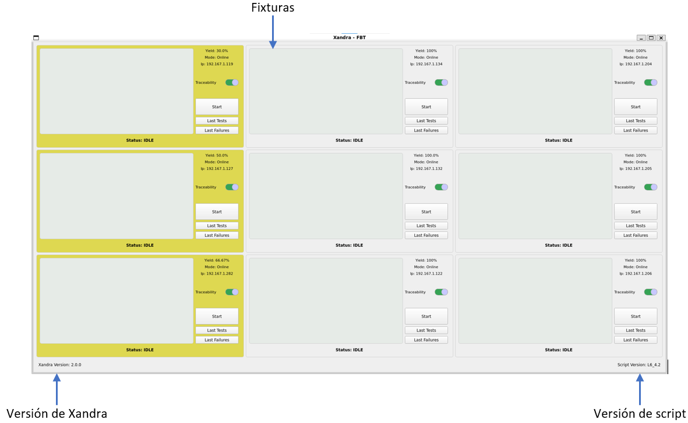
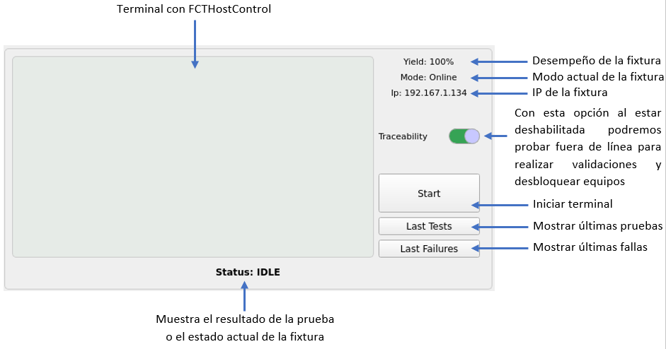
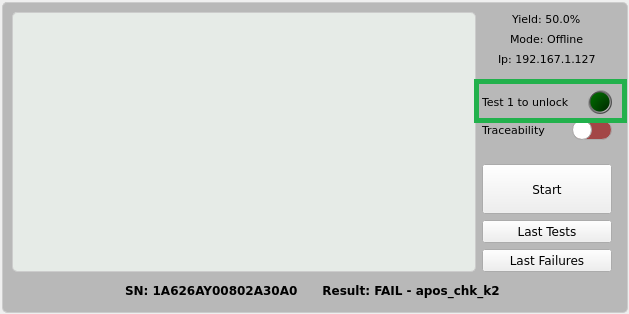

Operación Básica
Abrir Xandra
En el escritorio de cada servidor de prueba (PXE) se encuentra el ícono de la aplicación, al dar doble click sobre éste se abrirá una nueva ventana del programa, es importante señalar que Xandra está diseñado para solo abrir una ventana a la vez por lo que es posible que se encuentre con un mensaje de error al intentar ejecutarlo.
De forma alternativa es posible ejecutar el comando xandra en una terminal para lanzar una nueva ventana.
Info
Si obtiene un error al intentar abrir el programa diríjase a la sección solución de problemas para intentar encontrar un remedio a la situación.
Componentes de la ventana principal
La ventana principal muestra un arreglo de 9 componentes dispuestos de forma idéntica a como pueden ser localizadas físicamente las fixturas sobre los racks, cuenta con 3 columnas de 3 fixturas cada una.
En la parte inferior puede apreciarse la versión de Xandra, la versión del script de pruebas que está siendo utilizado, así como el estado general del programa.
Sus componentes son los siguientes:

Componentes de la fixtura
Cada fixtura se encuentra representada en la ventana principal por un componente gráfico cuya finalidad es facilitar la visualización del estado y configuración de la misma. Todos los componentes pueden ajustarse y manipularse de manera independiente debido a que todos sus procesos se ejecutan en hilos separados para garantizar un aislamiento concurrente adecuado.
Sus componentes son los siguientes:

Iniciar FCTHostControl en la fixtura
Para iniciar el secuenciador FCTHostControl en una fixtura basta con presionar el botón Start y Xandra iniciará una nueva terminal con la configuración correspondiente.
Tip
Si presiona el atajo de teclado Ctrl+Shift+A puedes inicializar todas las fixturas al mismo tiempo.
-
Una vez inicializada la terminal seleccione el modelo que desea correr:
-
Cuando la fixtura esté lista para recibir tarjeta se mostrará el siguiente mensaje:

Note
Revise los modos de operación para tener conocimiento de cuál será el comportamiento de la fixtura según su configuración actual.
Detener FCTHostControl en la fixtura
Existen tres formas distintas para detener la terminal en una fixtura.
Botón stop
- Presiona el botón
Stoplocalizado en la parte superior de la fixtura.
Detener todas las fixturas
- Es posible detener todas las fixturas al mismo tiempo utilizando el atajo de teclas
Ctrl+Shift+S.
Cerrar la terminal
- Haz click sobre la terminal de la fixtura que deseas detener.
- Presiona el atajo de teclas
Ctrl+C.
Tip
Se recomienda siempre utilizar el botón Stop para detener la terminal de una fixtura ya que de esta manera se evita finalizar alguna prueba por accidente.
Estadísticas de últimas pruebas realizadas
Para visualizar un reporte de las últimas pruebas ejecutadas puedes hacer click en el botón Last Tests, en ésta ventana se encuentra un gráfico de pastel indicando el porcentaje de pruebas aprobadas y falladas, así como una tabla con el resumen de cada una de ellas.
En la última columna de la tabla se encuentra un botón con el cual es posible acceder directamente al logfile completo de la prueba para ver en detalle el resultado de cada paso realizado durante su ejecución.

Incrementar o disminuir la cantidad de pruebas visualizadas
Si requiere visualizar un número diferente de registros puede seleccionar la cantidad que mejor se adecúe a sus necesidades en el combobox ubicado sobre la parte inferior de la ventana. Los valores posibles son 10, 25, 50, 100,200.
Info
La cantidad por defecto del combobox es la que mejor se adecúe a la configuración yieldCalcQty.
Mostrar resultados de pruebas realizadas en modo Retest (Show Retest)
Muestra u oculta las pruebas realizadas en modo Retest.
De manera automática se sincroniza el checkbox Show Retests con el modo actual de la fixtura, dando como resultado que una vez entrando en modo Retest al abrir la ventana de últimos resultados la tabla muestre todas las pruebas incluyendo aquellas realizadas bajo el modo retest, por el contrario, si la fixtura se encuentra en cualquier otro modo, el selector estará deshabilitado de manera predeterminada.
Columna Description
En esta columna se guarda una síntesis de la causa por la cual falló la prueba, listando errores como problemas de dimm o el voltaje que provocó dicho comportamiento inesperado.
Columna Mode
En esta columna se especifica el modo con el cual fué ejecutada la prueba (ver sección modos para mayor información).
Estadísticas de últimas fallas
Si requiere visualizar un reporte con las últimas fallas presentadas en la fixtura presione el botón Last Failures, en ésta ventana se encuentra un gráfico de pastel indicando las fallas y su porcentaje de incidencia según su clasificación (stepLabel), así como una tabla con el resumen de cada una de ellas.
El objetivo de ésta ventana es identificar las fallas que está teniendo la fixtura para realizar un mejor mantenimiento preventivo y correctivo.

Nota
Tanto la tabla como los controles en la parte inferior de esta ventana funcionan de la misma manera que la ventana Estadísticas de últimas pruebas realizadas.
Lógica para el bloqueo de fixturas
Una de las razones de ser de Xandra es la posibilidad de bloquear el uso de una fixtura basado en una serie de reglas previamente establecidas.
Actualmente la fixtura es bloqueada si se cumple una de 2 condiciones:
- El yield es más bajo que lo especificado en la configuración
yieldErrorThreshold. - La fixtura falló de manera consecutiva la cantidad de pruebas especificadas en la configuración
lockFailQty.
Una vez que se cumple alguna de las dos condiciones, al ingresar una tarjeta de prueba la fixtura abortará la prueba de forma automática hasta que nuevamente se encuentre en condiciones óptimas para operar. La fixtura bloqueada puede ser identificada fácilmente pues su control es pintado de color rojo para indicar visualmente dicho estado, como se muestra en la siguiente imagen:

El bloqueo de la fixtura se realiza al ejecutar un script de comprobación desde el sistema FCTHostControl, mismo que se puede establecer en su archivo de configuración FCTHostControl.config en la sección Check_Station. De forma automática Xandra sobre-escribe la configuración antes mencionada para ejecutar el script Resources/chk_station_is_disabled.py antes de cada prueba.
Example
"Check_Station": {
"Enable": true /*true: call the script, false: disable*/,
"App_Path": "/usr/local/Foxxcon/automation/Xandra/Resources/chk_station_is_disabled.py" ,
"App_Args": "" /*The parameters for script calling, support variable: ${sn}, ${mac}, ${usb}, ${led}, ${ledmsg}*/,
"Delay": 5000 /*Delay for script exit, millisecond*/
},
Script chk_station_is_disabled.py
Este script se comunica mediante "websocket" con el programa principal de Xandra para obtener el estado actual de la fixtura desde el que es invocado, para obtener dicha información el script lee la variable de entorno con el nombre especificado en la configuración fixtureIpEnvironmentName, tras lo anterior envía una petición a Xandra solicitando el estado actual de dicha fixtura, para informar a FCTHostControl si debe continuar o no la prueba se hace uso del estado de salida exit(0) significa que la fixtura está funcionando correctamente y por lo tanto debe continuar con la prueba, por el contrario, si el estado es exit(1) la señal es que aborte la prueba.
Warning
Si no se configura correctamente el archivo FCTHostControl.config para ejecutar el script chk_station_is_disabled.py, Xandra no podrá bloquear la fixtura.
Lógica para el desbloqueo de fixturas
Una vez bloqueada la fixtura existen 2 posibilidades para desbloquearla:
- Subir el yield por encima de lo especificado en la configuración
yieldErrorThreshold. - La fixtura pasa de manera consecutiva la cantidad de pruebas especificadas en la configuración
unlockPassQty.
Una vez cumplida una de las dos condiciones el control de la fixtura remueve el color rojo del mismo.
Para desbloquear una fixtura realice los siguientes pasos:
- Activar el modo
Offlineen la fixtura para desbloquearla, se debe tomar en cuenta que la prueba no reflejará los resultados en el sistema de trazabilidad. - Pruebe la cantidad de tarjetas especificadas en la leyenda
Test * to unlock.  - Repita el paso anterior hasta que el led se ilumine en color verde y la leyenda cambie a
Unlocked. - Presione el botón stop.
- Active el modo de operación deseado.
Detección de resultados
Xandra detecta los resultados al escuchar la carpeta especificada en la configuración logsPath, cada que se crea un nuevo archivo en esta ruta su contenido es procesado y almacenado, de igual manera se ve reflejado en la interfaz gráfica afectando el estado de la fixtura asociada al resultado de la prueba detectada.
Detección de final de la prueba
Al ser Xandra una envoltura de FCTHostControl la única manera disponible de detectar el final de una prueba es mediante la detección de un archivo de registro (logfile) o mediante la ejecución de un script configurado en la sección Test_End_Call del archivo FCTHostControl.config, ésta configuración se escribe de manera automática al iniciar Xandra.
Example
"Test_End_Call": {
"Enable": true /*true: call the script, false: disable*/,
"App_Path": "/usr/local/Foxconn/automation/Xandra/Resources/chk_station_test_finished.py" ,
"App_Args": "" /*The parameters for script calling, support variable: ${sn}, ${mac}, ${usb}, ${led}, ${ledmsg}*/,
"Delay": 5000 /*Delay for script exit, millisecond*/
},
El script ejecutado es Resources/chk_station_test_finished.py el cual informa mediante "websocket" a Xandra que la fixtura con cierta ip terminó su prueba.